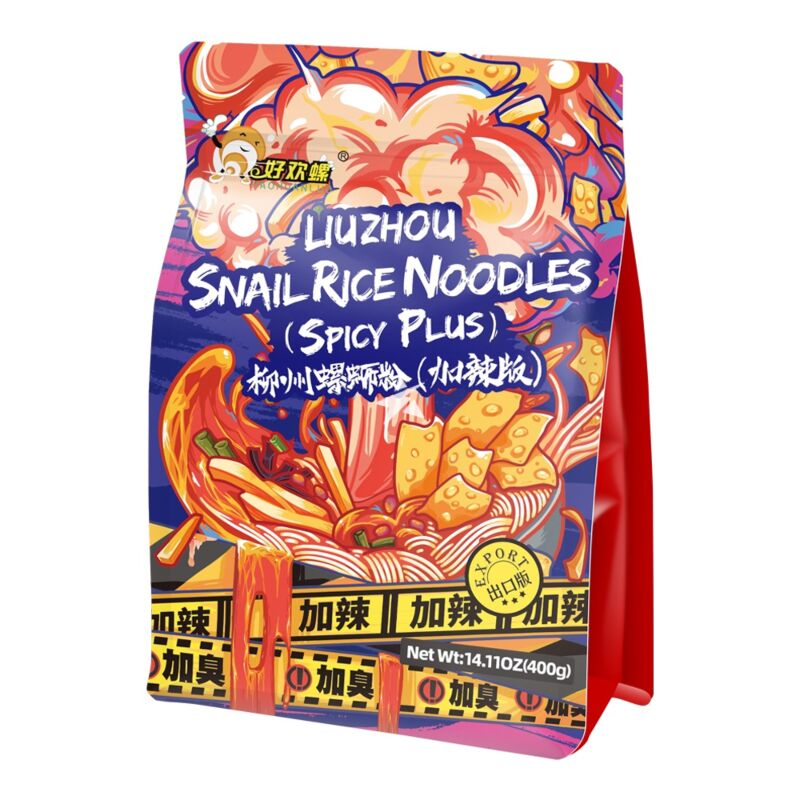
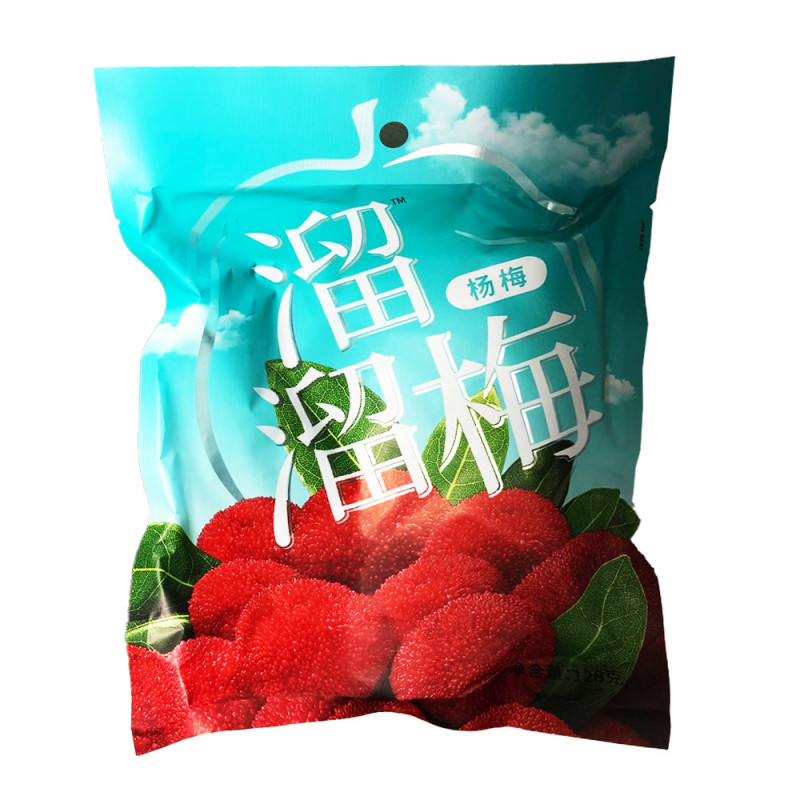
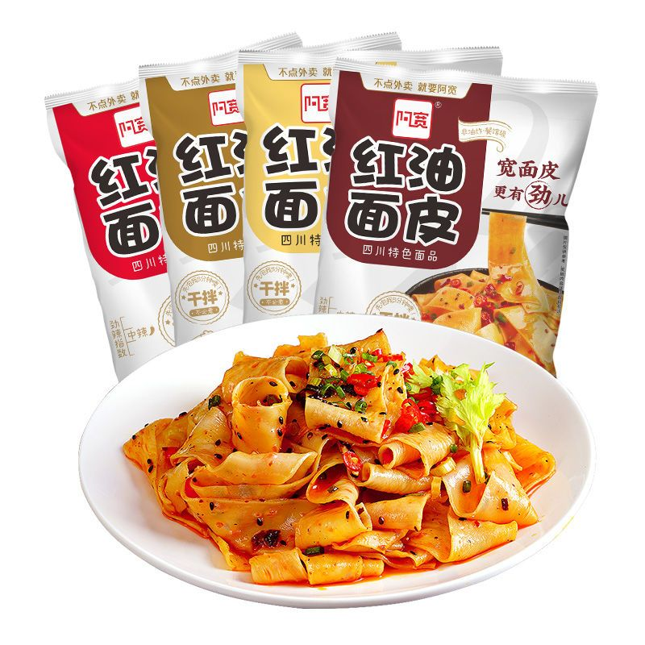
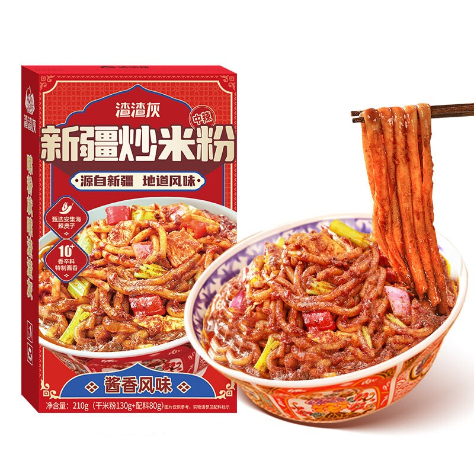

중국에서 진짜 핫한 즉석 음식입니다. 한국에 있는 중국 식품 가게에 거의 다 있을 겁니다. 끓고 나오면 딱 그림과 같이 나옵니다. 중국에서 홍콩 음식을 먹어봤는데 확실히 비슷한 향기가 나옵니다. 다양한 품종으로 나오는데 대부분 사람들은 빨간 포장의 것을 가장 좋아할 것입니다.

haohuanluo
젊은이들 중 가장 중독적인 음식 중의 하나입니다. 이것도 한국에 있는 중국 식품 가게에 거의 다 있을 겁니다. 주의해야 할 점은 냄새가 지독하고 사라지기가 어렵습니다(하지만 저는 처음부터 이 냄새를 즐겼습니다). 하지만 한 번만 즐기면 그 후 이냄새가 지독하다고 느껴지지 않습니다. 저는 가게에서 먹어봤는데 이것보다 못하다고 생각됩니다.

liuliumei
매실을 좋아하는 분이 많이 좋아할 것입니다. 저는 양매라고 부르는 부류가 가장 종아합니다. 이는 아마 절반의 중국 식품가게만 갖고 있을 것입니다.

hongyoumianpi
이거는 냄비에다 끓는 물 부어 놓고 기다렸다가 5 분 후 물을 버리고 이대로 비비면 됩니다. 그립처럼 예쁘게 나오지는 못하지만 보통 라면보다 싸고 맛있습니다(저는 사천 음식 중독자여서).

zhazhahuixinjiangchaomifen
이거는 대림에 있는 한 가게만 빼고는 한국에 있는 중국 식품 가게에 거의 못 봤습니다. 쿠팡에는 그래도 파는 것이 있습니다. 신강의 요리인데 조리법은 먼저 국수를 익히고 난다음 소스와 약간의 물과 같이 볶는 것입니다. 맛은 사천의 맛과 중동 지역의 음식의 결합체로 봐도 될것 같습니다.